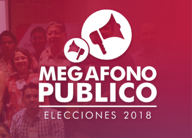
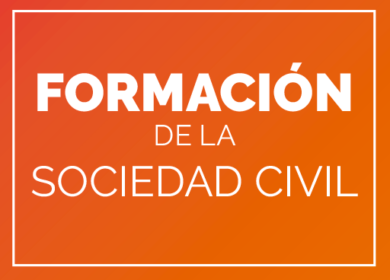
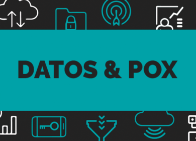
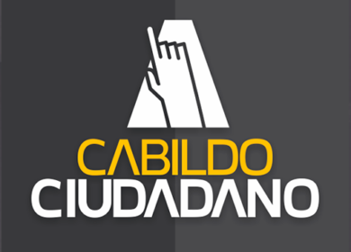
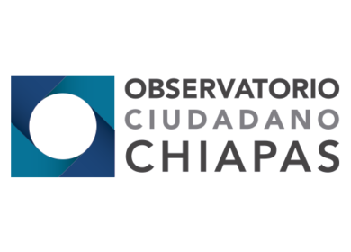

Metodología para generar una estrategia de incidencia que fortalezca alianza entre ciudadanía, organizaciones civiles e instituciones de gobierno

Megafono Publico
Plataforma de información pública sobre candidaturas y propuestas, diseñada para dar elementos para un análisis crítico y voto informado.

Talleres
Talleres de formación y capacitación para las organizaciones de la sociedad civil, con el fin de brindar herramientas a favor del cambio social.

Datos y pox
Evento bimestral que reúne a la comunidad trabajando con datos abiertos en distintos temas, para charlar sobre proyectos locales y disfrutar de una bebida tradicional chiapaneca, el pox.

Cabildo Ciudadano
Plataforma web de seguimiento y difusión de las sesiones de Cabildo del Ayuntamiento de la Ciudad para fomentar la transparencia y la participación ciudadana.

Observatorio Ciudadano
Analizamos la incidencia delictiva, el acceso a la justicia y la legalidad en el país. Damos a conocer la información pública sobre delitos de alto impacto.